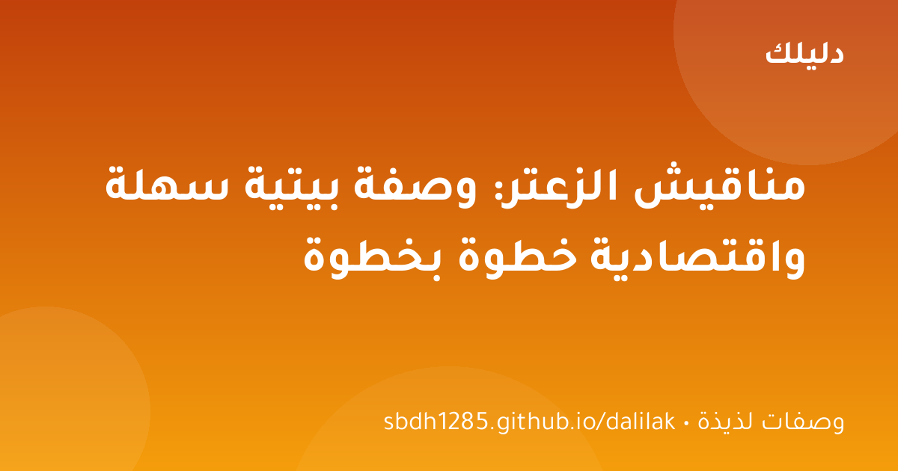
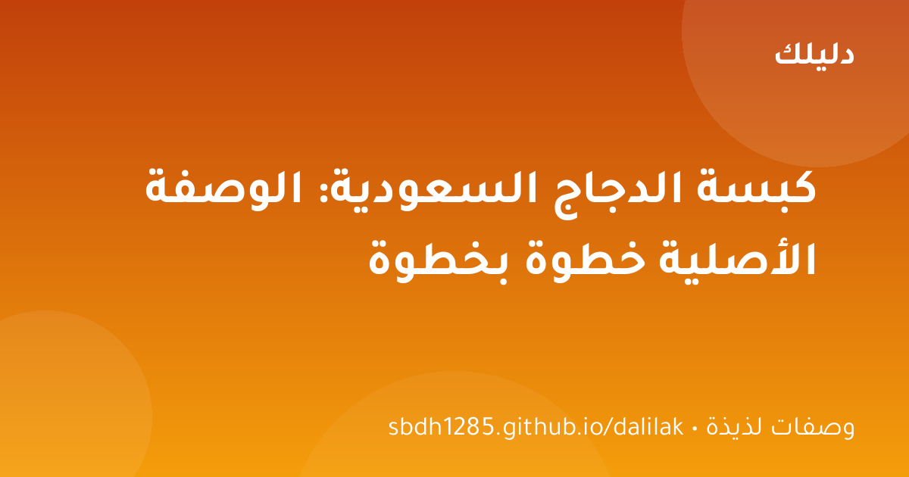
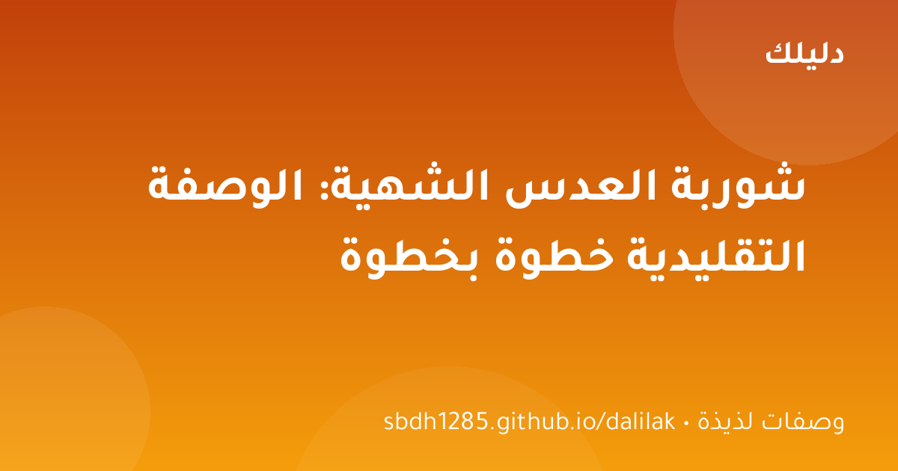
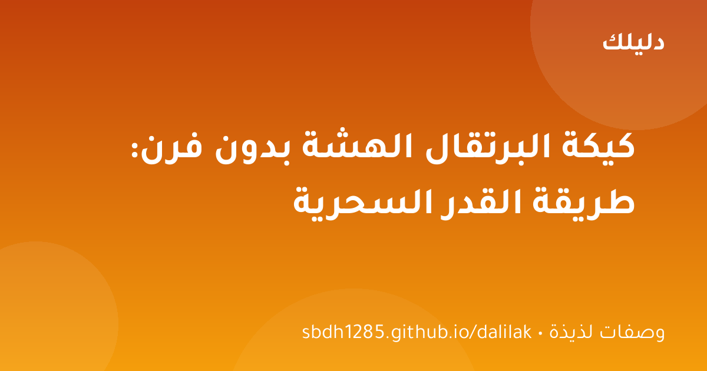

🍽 وصفات لذيذة
مناقيش الزعتر: وصفة بيتية سهلة واقتصادية خطوة بخطوة
مناقيش الزعتر الشهية كما في المخابز — عجينة هشة وخلطة زعتر غنية، بخطوات واضحة ومكونات متوفرة في كل بيت.

الكبسة ليست مجرد وجبة؛ إنها عنوان الكرم في المطبخ الخليجي. طبق يجمع العائلة حوله في العزائم، ورائحته المميزة من بهارات الكبسة تملأ البيت وتعلن أن «وليمة» على الطريق. وصفة اليوم هي الوصفة الأصلية المضبوطة: دجاج طري متبل، أرز حباته مفلفلة، وطعم متوازن لا يشبع منه أحد.
الكبسة طبق يبدو احترافيًا لكنه في الحقيقة بسيط: تتبيلة صحيحة، مرق غني، وأرز مضبوط النسبة. اتبع الخطوات بالترتيب ولن تحتاج بعدها إلى مطعم؛ عائلتك وضيوفك سيقولون «الكبسة عندك أحسن من المطاعم».
اغسل الأرز البسمتي وانقعه عشرين دقيقة كي تطول الحبات. سمح للمرق بأن يتشرب تمامًا قبل رفعه عن النار، واتركه مغطى عشر دقائق ليترخى. بهارات الكبسة تُحمّص طازجة لرائحة أقوى. قطع الدجاج متوسطة كي تنضج متساوية مع الأرز.

مناقيش الزعتر الشهية كما في المخابز — عجينة هشة وخلطة زعتر غنية، بخطوات واضحة ومكونات متوفرة في كل بيت.

شوربة العدس — الطبق الدافئ الذي يجمع العائلة: مكونات بسيطة، خطوات واضحة، وأسرار الشيف للحصول على قوام كريمي وطعم لا يقاوم.

لا تملك فرنًا؟ لا مشكلة! كيكة البرتقال الهشة والعطرية تُطهى على الموقد في قدر عادي — وصفة سهلة بمكونات متوفرة.